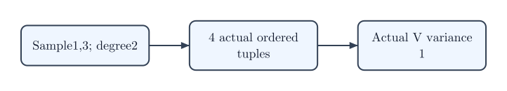
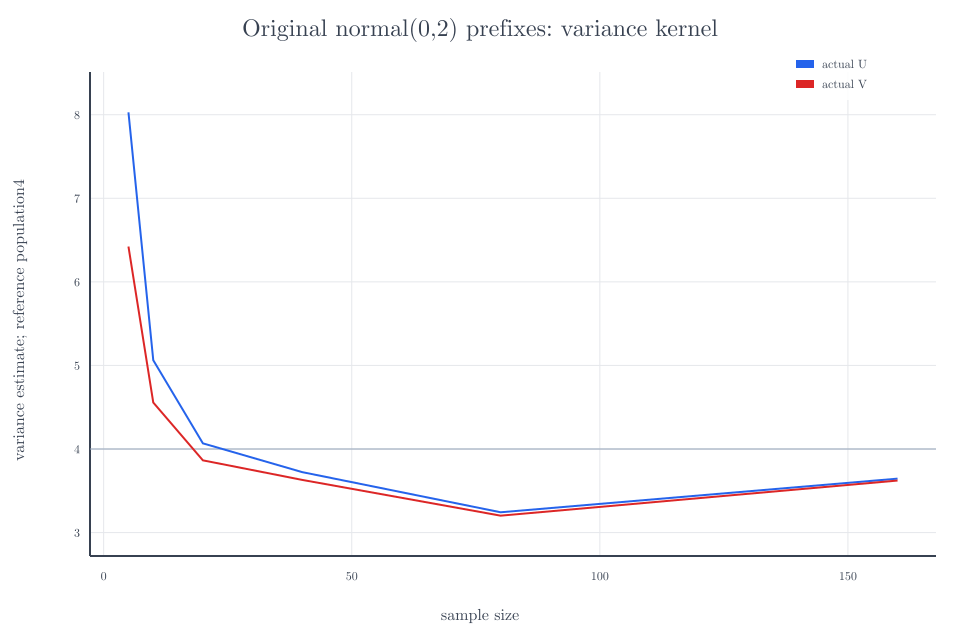
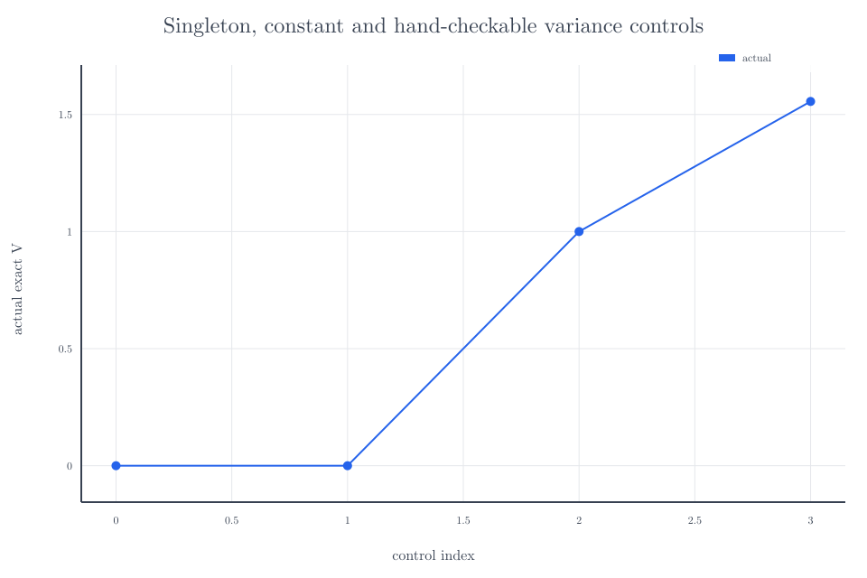
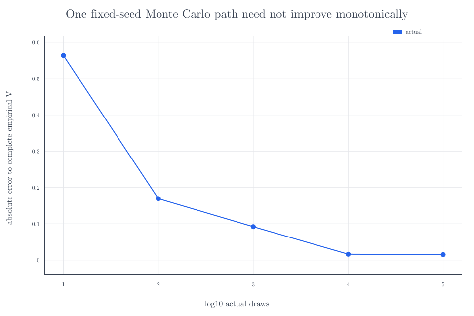

V-statistics: actual repeated-index tuples and plug-in variance
Abstract
A kernel expectation under an empirical distribution includes repeated sample indices. V-statistics average those ordered tuples, making the distinction from distinct-index U-statistics explicit.
The method
V_n=n^(−m)Σ_(i1,...,im)h(X_i1,...,X_im), with every index independently ranging over0..n−1. For h(a,b)=(a−b)²/2, expanding the double sum gives V_n=(1/n)Σ(X_i−mean)². Diagonal terms vanish, so V_n=((n−1)/n)U_n, where U uses the unbiased variance denominator n−1. This is an exact finite-sample identity for this kernel. Automatic mode enumerates up to5 million tuples, then uses200000 Monte Carlo draws; a positive max_terms always requests that many sampled tuples.
Simple worked example
#include <dm/dm.hpp>
int main() {
namespace a = dm::algorithms;
namespace g = dm::graphics;
std::filesystem::create_directories("build");
auto r =
dm::stats::VStatistic(2).trace({1, 3},
dm::stats::empirical_variance_kernel, 4);
std::print("| actual indices | actual arguments | kernel value |\n|---|---|---:|\n");
for (auto q : r.terms)
std::print("|`{}`|`{}`|{}|\n", q.indices, q.arguments, q.value);
std::print("\nActual mean {}; exact {}; calls {}.\n", r.result.estimate,
r.result.exact, r.result.num_terms);
g::Diagram concept_diagram(48, 1100);
concept_diagram.node("n0", {0, 0}, "Sample1,3; degree2");
concept_diagram.node("n1", {5, 0},
std::format("{} actual ordered tuples",
r.result.num_terms));
concept_diagram.node("n2", {10, 0},
std::format("Actual V variance {}", r.result.estimate));
concept_diagram.edge("n0", "n1").edge("n1", "n2");
concept_diagram.save_svg("build/v_statistic_tiny.svg");
}| actual indices | actual arguments | kernel value |
|---|---|---|
[0, 0] | [1, 1] | 0 |
[0, 1] | [1, 3] | 2 |
[1, 0] | [3, 1] | 2 |
[1, 1] | [3, 3] | 0 |
Actual mean 1; exact true; calls 4.

The retained original experiment
#include <dm/dm.hpp>
int main() {
namespace a = dm::algorithms;
namespace g = dm::graphics;
std::filesystem::create_directories("build");
auto full = dm::stats::v_statistic_example_sample();
std::vector<double> nx, uy, vy;
std::print("| n | actual U | actual V | V-U | (n-1)/n*U |\n|---:|---:|---:|---:|---:|\n");
for (std::size_t n : {5, 10, 20, 40, 80, 160}) {
std::vector<double> sample(full.begin(), full.begin() + n);
auto u =
dm::stats::UStatistic(2).run(sample,
dm::stats::empirical_variance_kernel).estimate;
auto v =
dm::stats::VStatistic(2).run(sample,
dm::stats::empirical_variance_kernel);
std::print("|{}|{}|{}|{}|{}|\n", n, u, v.estimate, v.estimate - u,
double(n - 1) / n * u);
nx.push_back(n);
uy.push_back(u);
vy.push_back(v.estimate);
}
auto p = g::RPlot::create();
p.line(nx, uy, "actual U", {37, 99, 235});
p.line(nx, vy, "actual V", {220, 38, 38});
p.abline_h(4, {148, 163, 184});
p.title("Original normal(0,2) prefixes: variance kernel").x_label(
"sample size").y_label("variance estimate; reference population4");
p.save_svg("build/v_statistic_original.svg");
}| n | actual U | actual V | V-U | (n-1)/n*U |
|---|---|---|---|---|
| 5 | 8.028480943129226 | 6.422784754503382 | -1.6056961886258447 | 6.422784754503382 |
| 10 | 5.062405773009016 | 4.556165195708115 | -0.5062405773009013 | 4.556165195708115 |
| 20 | 4.067706190637748 | 3.864320881105867 | -0.2033853095318805 | 3.86432088110586 |
| 40 | 3.723584567076504 | 3.6304949528995962 | -0.09308961417690798 | 3.6304949528995913 |
| 80 | 3.242944543506988 | 3.2024077367131567 | -0.040536806793831204 | 3.2024077367131505 |
| 160 | 3.6455240232249935 | 3.6227394980798637 | -0.02278452514512974 | 3.6227394980798375 |

Checking the theory and controls
#include <dm/dm.hpp>
int main() {
namespace a = dm::algorithms;
namespace g = dm::graphics;
std::filesystem::create_directories("build");
std::vector<double> x, y;
std::print("| sample | exact V | U if n>=2 |\n|---|---:|---:|\n");
int i = 0;
for (auto sample : std::vector<std::vector<double>>{{1}, {1, 1}, {1, 3},
{1, 2, 4}}) {
auto v =
dm::stats::VStatistic(2).run(sample,
dm::stats::empirical_variance_kernel);
double u =
sample.size() > 1
? dm::stats::UStatistic(2).run(sample,
dm::stats::empirical_variance_kernel).estimate
: 0;
std::print("|`{}`|{}|{}|\n", sample, v.estimate, u);
x.push_back(i++);
y.push_back(v.estimate);
}
auto p = g::RPlot::create();
p.line(x, y, "actual", {37, 99, 235}, 2);
p.points(x, y, "", {37, 99, 235}, 5);
p.title("Singleton, constant and hand-checkable variance controls").x_label(
"control index").y_label("actual exact V");
p.save_svg("build/v_statistic_controls.svg");
}| sample | exact V | U if n>=2 |
|---|---|---|
[1] | 0 | 0 |
[1, 1] | 0 | 0 |
[1, 3] | 1 | 2 |
[1, 2, 4] | 1.5555555555555556 | 2.3333333333333335 |

Sensitivity and selected work
#include <dm/dm.hpp>
int main() {
namespace a = dm::algorithms;
namespace g = dm::graphics;
std::filesystem::create_directories("build");
auto sample = dm::stats::v_statistic_example_sample(40);
double exact =
dm::stats::VStatistic(2).run(sample,
dm::stats::empirical_variance_kernel).estimate;
std::vector<double> x, y;
std::print("| requested draws | actual terms | exact mode | estimate | absolute error to complete V " "|\n|---:|---:|---|---:|---:|\n");
for (std::size_t draws : {10, 100, 1000, 10000, 100000}) {
auto r =
dm::stats::VStatistic(2, {draws, 42}).run(sample,
dm::stats::empirical_variance_kernel);
std::print("|{}|{}|{}|{}|{}|\n", draws, r.num_terms, r.exact,
r.estimate, std::abs(r.estimate - exact));
x.push_back(std::log10(draws));
y.push_back(std::abs(r.estimate - exact));
}
auto p = g::RPlot::create();
p.line(x, y, "actual", {37, 99, 235}, 2);
p.points(x, y, "", {37, 99, 235}, 5);
p.title("One fixed-seed Monte Carlo path need not improve monotonically").x_label("log10 actual draws").y_label("absolute error to complete empirical V");
p.save_svg("build/v_statistic_work.svg");
}| requested draws | actual terms | exact mode | estimate | absolute error to complete V |
|---|---|---|---|---|
| 10 | 10 | false | 4.194359932823138 | 0.563864979923542 |
| 100 | 100 | false | 3.799633524593055 | 0.16913857169345858 |
| 1000 | 1000 | false | 3.7223664964935312 | 0.09187154359393501 |
| 10000 | 10000 | false | 3.614397626923646 | 0.01609732597595004 |
| 100000 | 100000 | false | 3.6454999930460796 | 0.015005040146483406 |

Interpretation and limits
Exact refers to complete tuple enumeration with floating arithmetic, not exact real arithmetic. Sampled tuples repeat indices within a tuple and can repeat entire tuples across draws. The callback runs once per actual term; captures are prefixes from the same loop. Finite-value and output/work checks prevent silent invalid results. Bias/asymptotic statements require kernel/distribution assumptions; the variance identity is derived without a universal bias claim.
All programs are complete editable C++ sources; figures are local files. Actual traces and selected counts come from the producing native kernels, not an independent report reconstruction.
References
The empirical-distribution expectation and variance-kernel U/V identity are derived above. No unqualified asymptotic theorem is asserted.
Verified in the shared final four-document batch: 46 scoped native cases;8
directly instrumented ASan/UBSan cases;42 executable public examples;168/168
definitions across10 full scopes;4 hovers;6866 independent records/32327
checks;four frozen surfaces with original seeded fixtures retained;5
checkout/installed standalone headers and linked four-family consumer;16
executed programs and16 inspected figures with both exports. Receipts:
build/mepml-conversion/batch-424-427/.